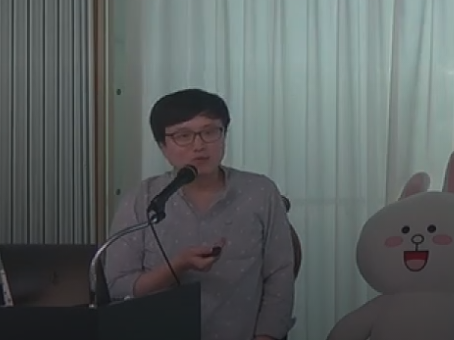

|
JUNGTAEK KIM Ph.D. Student jtkim [at] postech [dot] ac [dot] kr |
 |
NEWS
CURRENT RESEARCH INTERESTS
PUBLICATIONS
Conference / Journal / Workshop Papers
Work-in-Progress
EDUCATION
| Mar 01, 2015 - Feb 11, 2022 |
Ph.D. Course in Computer Science and Engineering, POSTECH (Supervisor: Prof. Seungjin Choi and Prof. Minsu Cho) |
| Mar 01, 2010 - Feb 13, 2015 |
B.S. in Mechanical Engineering & Computer Science and Engineering, POSTECH |
| Mar 01, 2007 - Feb 28, 2010 |
High School Graduate at Hansung Science High School |
WORK EXPERIENCES
| Jun 07, 2021 - Oct 01, 2021 |
Research Intern, Vector Institute / Toronto, Canada (Remote Research) |
| Oct 30, 2020 - Feb 05, 2021 |
Research Intern, Vector Institute / Toronto, Canada (Remote Research) |
| Jan 02, 2018 - Apr 27, 2018 |
Research Engineering Intern, SigOpt (acquired by Intel) / San Francisco, USA |
| Jul 25, 2017 - Oct 20, 2017 |
Research Intern, Samsung Electronics / Hwaseong, Republic of Korea |
| Jan 02, 2017 - Jan 26, 2017 |
Research Intern, Samsung Electronics / Hwaseong, Republic of Korea |
| Aug 01, 2016 - Aug 26, 2016 |
Research Intern, Samsung Electronics / Hwaseong, Republic of Korea |
AWARDS & HONOR
| Jun 09, 2019 | ICML Travel Award for ICML-2019 |
| Jun 06, 2018 | 2nd place in AutoML Challenge 2018 (PAKDD-2018 Data Competition) |
| Apr 15, 2018 | IEEE Signal Processing Society Travel Grant for ICASSP-2018 |
| Nov 18, 2016 | Best Paper Runner-Up Award (supported by LG U+) in 2016 Fall Conference of Korea Business Intelligence Data Mining Society |
| Jun 24, 2016 | 3rd place in AutoML5 phase of AutoML Challenge |
| Jul 03, 2014 | Software Maestro (organized by Ministry of Science, ICT and Future Planning, Republic of Korea & National IT Promotion Agency, Republic of Korea) |
| Mar 02, 2010 | Presidential Science Scholarship (awarded by the President of the Republic of Korea) |
PROFESSIONAL SERVICES
TEACHING
Teaching Assistant
ELSEWHERE
RELATED LINKS
Last updated: January 21, 2022